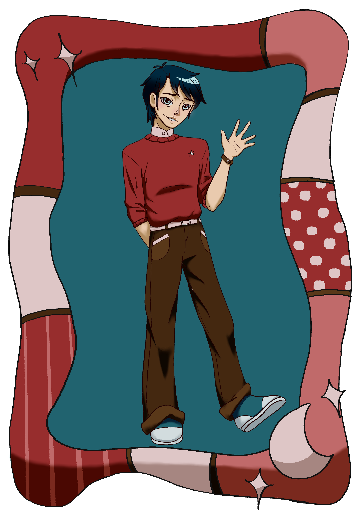
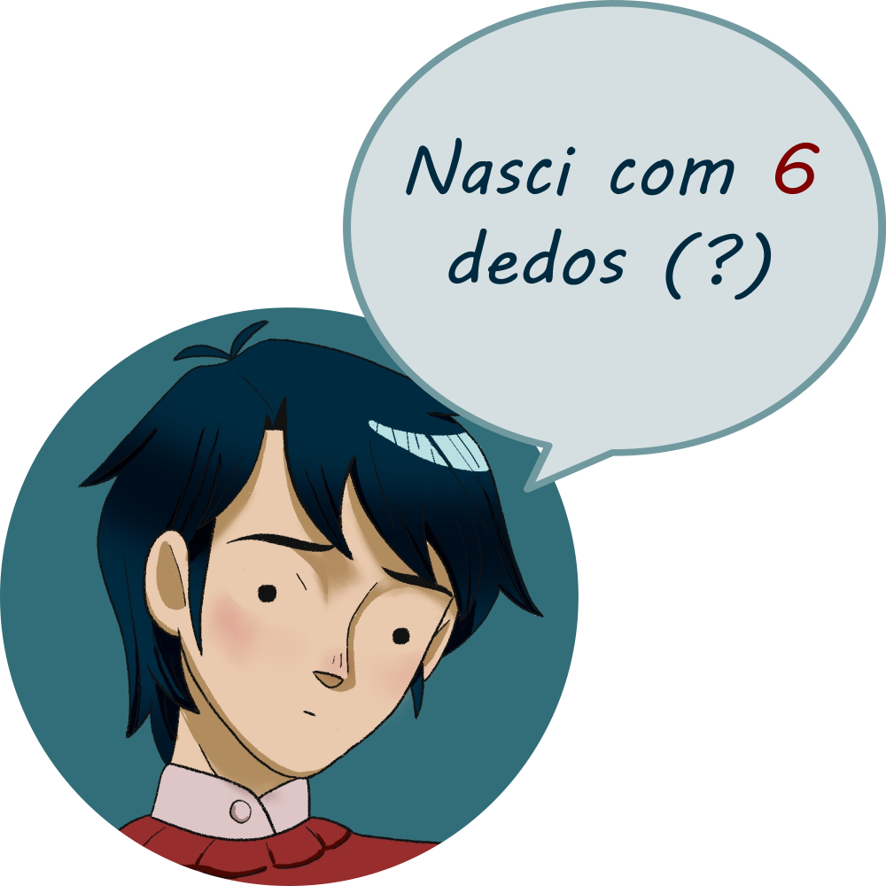

Quem é Raphael?
Raphael é um garoto saudável e bonito, está sempre com o cabelo arrumado e roupas caras dos ultimos lançamentos, do jeito que seu pai gosta. A única coisa em seu visual que foi escolha sua, é um pequeno broche em formato de lua que achou entre as joias antigas de sua mãe. Com sua família ele sente uma pressão constante de manter a sua imagem, mas com os amigos é quando ele finalmente pode se soltar e descansar um pouco sua performance.
Pode-se dizer que ele tem várias vidas, em que é um "eu" em cada uma delas, dependendo com quem está. Com seus pais, tem que ser o menino de ouro ideal, que poderá realizar todas as suas vontades e sonhos. Com seus amigos populares da escola, tem que ser o garoto legal que é mesquinho com os outros.
Com Gabriella e Luca, ele sente que finalmente pode ser ele mesmo, principalmente por Luca, seu amigo de infância, pelo qual começa a desenvolver uma paixão intensa.
Raphael não sabe o que sua vida poderia ser além do que seu pai disse. Ele foi criado para realizar o sonho de seu pai de se tornar um jogador de futebol. Então, nunca passou pela sua cabeça qual seria o seu sonho. Porém com o insentivo de Gabriella, ele está disposto a quebrar o controle de seu pai sobre sua vida.
Curiosidades
